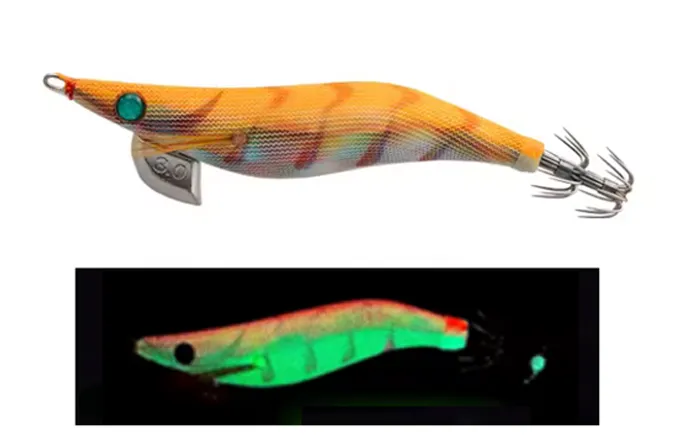

🟠 Color equilibrado entre natural y visible, perfecto para situaciones cambiantes.
| Condición | Eficiencia |
|---|---|
| 🌅🌇 Transición de luz | 🟢🟢 Muy alta |
| 💧 Aguas tomadas | 🟢 Alta |
| 🌊 Aguas profundas | 🟢 Alta |
| 🦑😴 Calamares pasivos | 🟡 Media |
| 🦑🤔 Calamares dudosos | 🟢🟢 Muy alta |